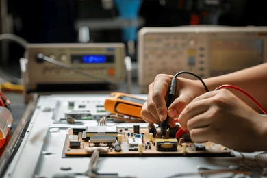

About Us
Fast, honest repairs for the devices you use every day.
Who we are?

Wire Tech Repairs is a team of technicians who love fixing electronics. We
started in 2026 with one simple idea: a broken device does not have to be a
lost device. Today we repair phones, laptops, tablets, and game consoles for
students, families, and small businesses.
Why us?
We explain the problem in simple words, give you a price before we start, and never fix anything without your approval. Most repairs are finished in 1 to 2 weeks, and every repair includes a 30-day warranty.
Repairing is also better for the planet. Fewer devices end up in the trash. If you want to learn how to fix small things yourself, check the free guides at iFixit.
- Free diagnosis
- Clear prices, no surprises
- Warranty on every repair
- Friendly, simple explanations
What devices we repair?
| Devices | Common Repairs |
|---|---|
| Phones | Cracked screens, batteries, charging ports |
| Laptops | Keyboards, screens, slow performance and components |
| Tablets | Screens, batteries, software problems |
| Game consoles | HDMI ports, overheating, controllers |
| Motherboards of any smart device |
No power, liquid damage, short circuits, damaged chips and connectors |
Note that some things can't be repaired, and it is better to replace them.